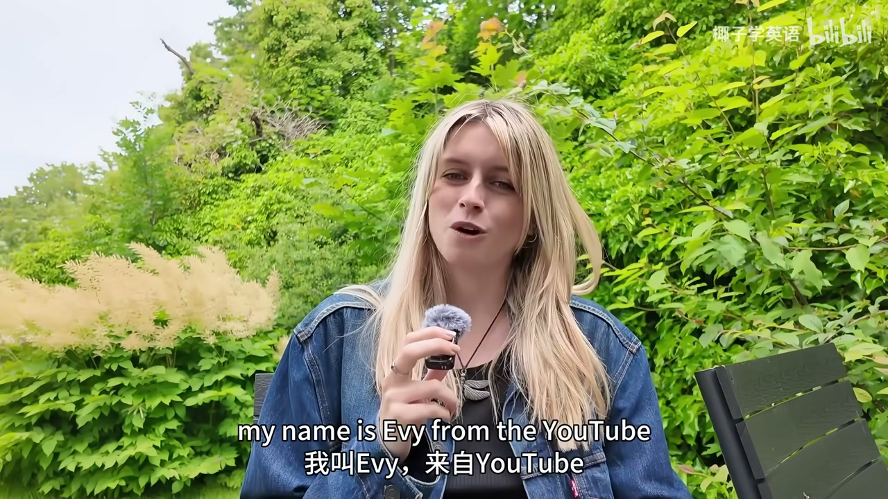
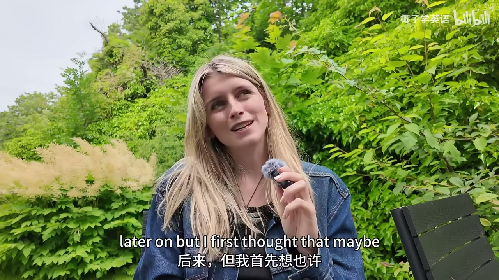
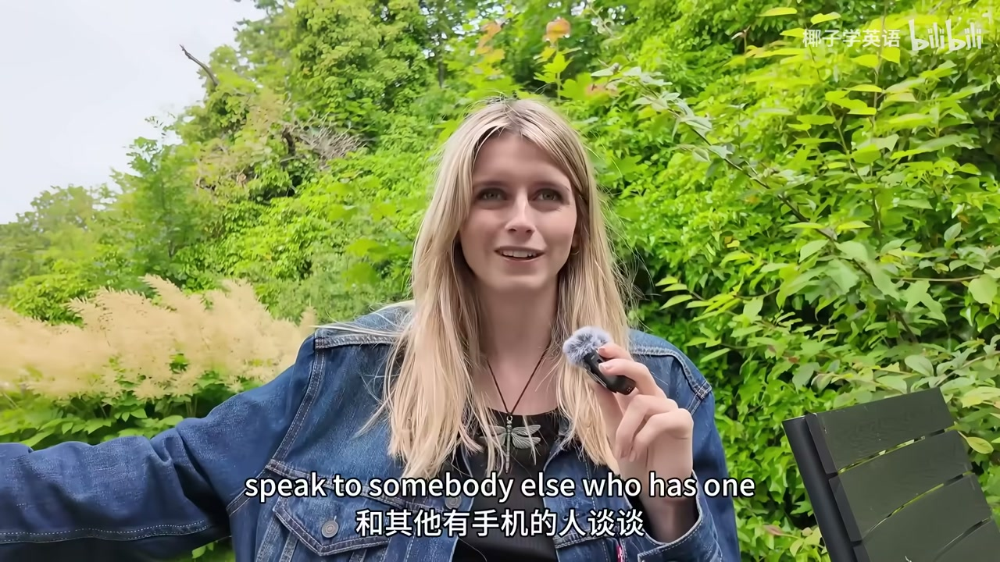
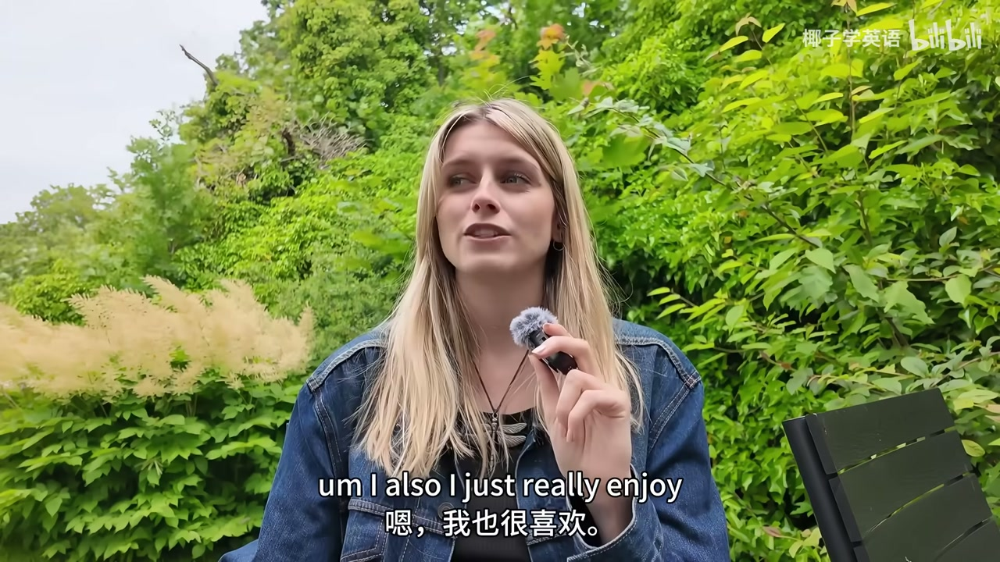
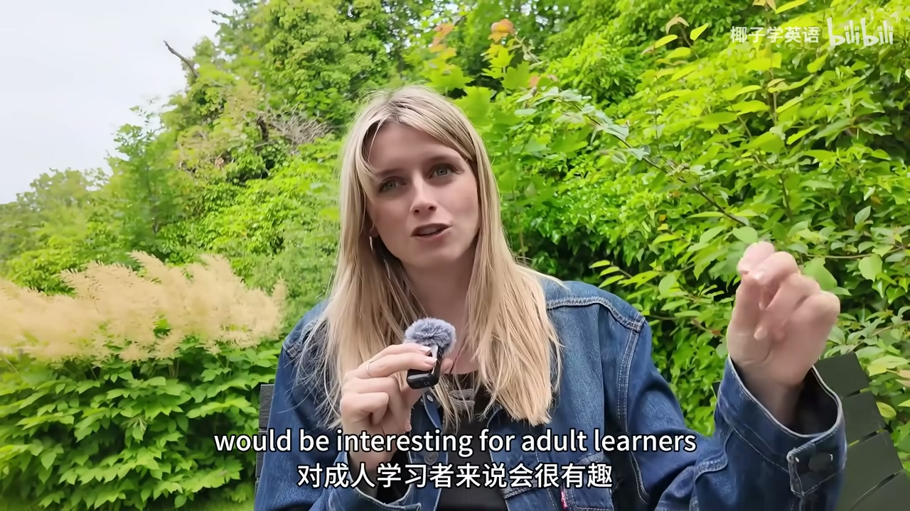
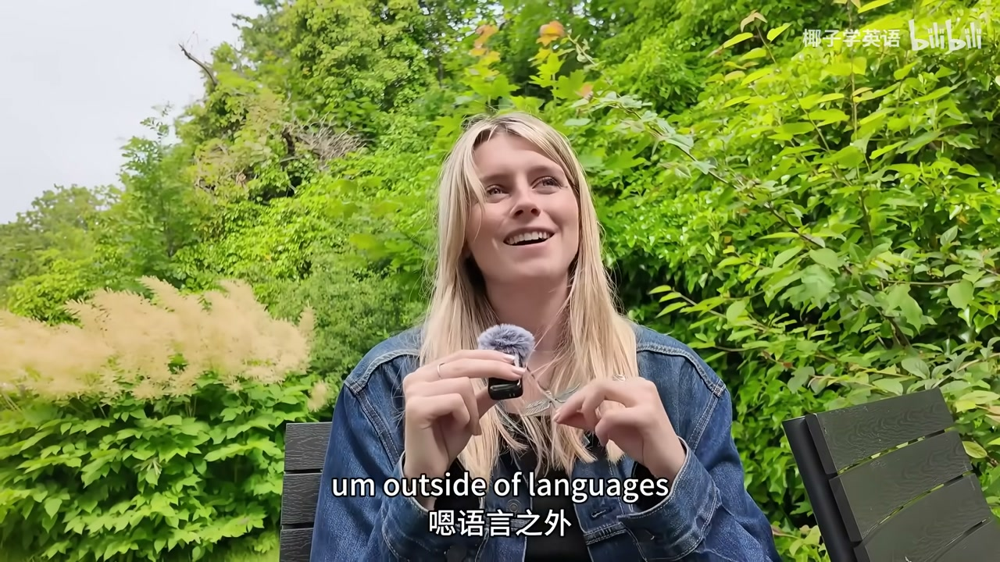
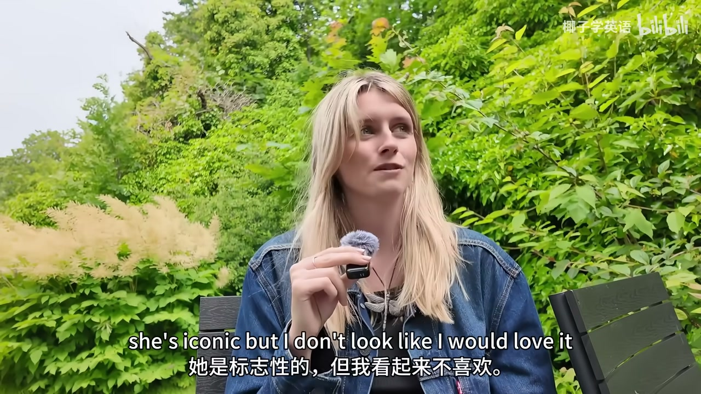
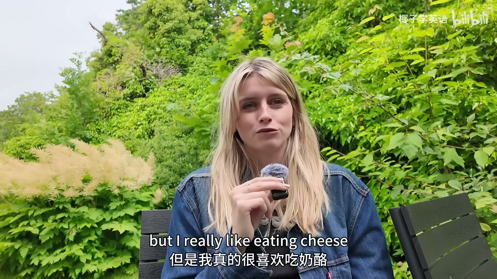
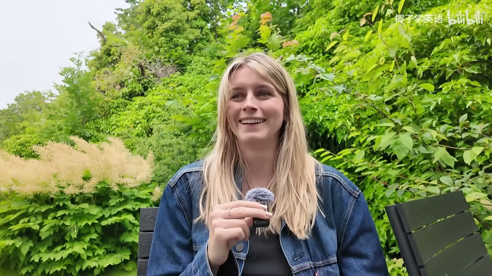
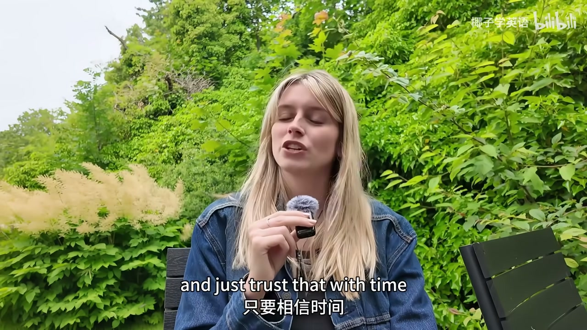

内容要点
B 站转载/搬运向的 Evie 英语播客第 1 集（片长约 15 分 44 秒）。标题写「慢速英语」，但可识别口播是接近自然语速的播客自我介绍 + 成人学习观点：播客适合忙人、兴趣优先于儿童向材料、听懂播客是里程碑。ASR 质量差：大量省略号噪声、中英夹杂误识别、后段几乎崩溃；下列只依据可拼读片段，并标明限制。
ASR 限制：约 01:18–02:18、03:31–04:01、05:43–07:39、08:33–09:33、13:13–15:13 等区间基本无有效文本。不臆造缺失段落。
知识结构
忙人可并行；理解口语输入。
成人不必硬看儿童动画；要在乎内容。
西语因生活关系而学；听懂播客后投入度上升。
把可理解且感兴趣的音频嵌进日常；材料「幼稚无趣」会破坏长期坚持。
可得片段播客定位与自我介绍
Evie 说明播客目标是让英语成为生活一部分，并声称对忙碌成人特别有效。自我介绍包含 LSE 历史学位、伦敦生活带来的口音，以及写作/创作爱好；语言方面以西语为成人学习样本。





可得片段兴趣、材料选择与劝听
她批评「成人学习者就该看小猪佩奇」的建议：无聊就无法坚持数年。后段劝听众把播客纳入例行，并称若能听懂当下内容说明水平已不错；西语学习中「听懂播客」曾显著提升投入。大量噪声段略。





完整转录
Welcome to the English podcast a podcast designed to make English a part of your life.
My name is Evie from the YouTube channel English with Evie, and it's great to have you here today for podcast episode one.
Podcast episode one.
We're making this podcast today because in my opinion podcasts are one of the best ways to improve your English, especially if you are a busy person.
If you are an adult or a busy student, I swear listening to podcasts is going to improve your English so much.
I will explain a little bit of my reasoning later. So the reason why I think this later on.
But I first thought that maybe I could introduce myself. Maybe this is your first time meeting me or you've seen me from my YouTube videos, but you don't really know who I am.
Or maybe maybe you don't care.I will explain anyway.I'll try and keep it keep it very brief.
. lots of people ask me. lots of people ask me ask me ask
....
I live in London for four years while I was at university.I did my degree at the London School of Economics in history.
That's why if I sound a little bit like I'm from London, that's probably why.
As a person, things that I am interested in personally, I really love writing. I'm a big writer. I love writing when I get time.
I like writing stories. I like writing poetry. I like writing articles.
Anything creative is just a lot of fun for me, including like making YouTube videos or podcasts. I really enjoy that as well, anything creative.
I also I just really enjoy language in general. So I like language learning. I love reading as well. I don't get a lot of time to read these days.
....
I think I'm going to read a book like this. It was a good book. If you want a random recommendation, Daisy Jones and the Six is very good.
So languages I mentioned that's something I like. I have only learned one language to a point where I could have a conversation which is Spanish.
I learned Spanish because my boyfriend is from Spain. So that's the reason why I learned that. I started learning that when I was 22 years old or 23 years old.
And I love it especially with languages. They say, ah, you know, if you're an adult learner, then watch Peppa Pig.
You know, that stupid kids cartoon. And honestly, are you going to make a 40 year old man watch Peppa Pig?
It's so boring and so much of learning a language is being interested. You need to really care because you are going to study.
that language for years
like maybe forever
很多人在我感动的之后,说我像Avril Lavigne
我笑了,因为如果大家听这个跟 Lawen 一样
我其实不像她
她不是一个流行nikers
她是 Rock Pop
2010年的流行vable
and we look we don't look alike in my opinion i think we're both just like
car
so I don't eat meat I don't eat fish I don't eat shellfish either like crabs or lobster or shrimp I don't eat any of it
So anyway maybe that's enough about me I wanted to convince you that this podcast is something that you should listen to, something you should engage with
It's something that should become part of your English study routine
if you can understand me right now honestly your level of English is very good
if you don't have a lot of time in the evenings to listen to Pepper Pig or whatever stupid thing you have to watch
it means that you can study while getting something else done
and at least for me with Spanish, the moment that I could understand podcasts it changed
engaging with the language so much more and I was really training my ear I was training my ear to
relying,,,,,,,,,,,,,,,,,,,,,,,,,,,,,,,,,,,,, ,
对不对 preserve button verste Phar의 Ne A helps HP Obuilt Our